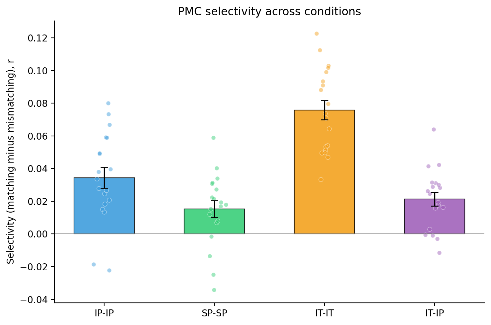

We tested whether the shared PMC pattern at each interruption epoch is epoch-specific: whether ISPC at matching epochs (i = j) exceeds ISPC at mismatching epochs (i ≠ j). Inter-subject pattern correlation (ISPC) was measured in a 15-second window spanning the ten TRs that began 7.5 s after interruption onset (the first five post-onset TRs were discarded to avoid hemodynamic carry-over from the preceding story segment). For every ordered pair of epochs (i, j) the Pearson correlation between the participant's PMC pattern at epoch i and the across-participant average PMC pattern of the other participants at epoch j was computed at every TR and averaged across the ten TRs to a single (seventeen-by-seventeen) score. For each participant the seventeen diagonal entries formed the matching set and the off-diagonal entries formed the mismatching set; participant selectivity was mean(matching) − mean(mismatching), and group selectivity the across-participants mean. ISPC was computed under four inter-subject schemes: three within-condition (IP-IP, SP-SP, IT-IT) and one across-condition (IT-IP), in which each intact-theory-of-mind participant is compared with the across-participant average pattern of the intact-pause group. Intact-pause and intact-theory-of-mind share a timing table, so for IT-IP a matching entry is also the same point in the narrative. PMC voxels were defined by the project's anatomical PMC mask and per-voxel timecourses were z-scored across the entire run before analysis.
To test whether group selectivity exceeds chance, we reshuffled each participant's matching-versus-mismatching labels: the matching and mismatching ISPC values were pooled and randomly re-assigned to sets of the original sizes, participant selectivity was recomputed, and the group mean was recorded; 10000 iterations built the null. The one-tailed permutation p is (k + 1)/(10000 + 1), where k is the number of null group selectivities at-or-above the observed value (expected direction: > 0). The table also reports the standard error of the group selectivity, a bootstrap 95% confidence interval (10000 iter, resampling participants), a descriptive paired t-test on subject (matching − mismatching) values, and Cohen's d; the legend under the table defines each column.
Primary stats (unshaded) | Descriptive / context (light gray)
| Cond | Selectivity | SE | 95% CI | p (perm) | n | Mean matching r | SEmatch | Mean mismatching r | SEmismatch | t | df | p (paired) | d |
|---|---|---|---|---|---|---|---|---|---|---|---|---|---|
| IP-IP | 0.0345 | 0.0064 | [0.0222, 0.0463] | 0.0002 | 19 | 0.1166 | 0.0126 | 0.0822 | 0.0075 | 5.418 | 18 | 3.79e-05 | 1.243 |
| SP-SP | 0.0152 | 0.0051 | [0.0050, 0.0248] | 0.0266 | 19 | 0.0813 | 0.0125 | 0.0661 | 0.0085 | 2.978 | 18 | 0.0081 | 0.683 |
| IT-IT | 0.0758 | 0.0059 | [0.0647, 0.0870] | 1.00e-04 | 19 | 0.1863 | 0.0103 | 0.1105 | 0.0058 | 12.828 | 18 | 1.71e-10 | 2.943 |
| IT-IP | 0.0213 | 0.0042 | [0.0134, 0.0297] | 0.0034 | 19 | 0.0456 | 0.0102 | 0.0243 | 0.0083 | 5.029 | 18 | 8.71e-05 | 1.154 |

Bars: group-mean selectivity (matching − mismatching r). Whiskers: ±SE across participants. Dots: subject selectivity values. IP-IP, SP-SP, IT-IT compare each participant with the average pattern of the other participants in the same condition; IT-IP compare each intact-theory-of-mind participant with the across-participant average of the intact-pause group, aligned by serial position.
The intact-pause and scrambled-pause conditions were run in separate groups of participants, so their group-mean selectivity (each participant’s mean matching minus mean mismatching inter-subject pattern correlation) was compared with a Welch two-sample t-test for independent samples (two-sided). Selectivity in the intact-pause group (mean = 0.0345, n = 19) differed significantly from the scrambled-pause group (mean = 0.0152, n = 19): t(34.4) = 2.355, p = 0.0243, Cohen’s d = 0.764.